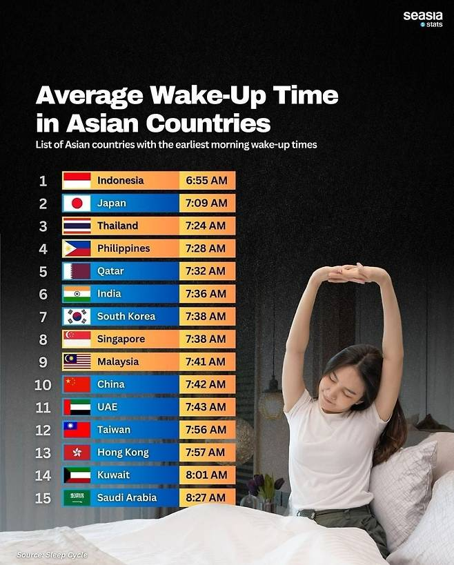

안녕하세요 인도네시아인입니다.

안녕하세요 인도네시아인입니다.
ㄹㅇ 일본이랑 같은 시차는 절대아닌데
9시출근이긴한데
길막히는게 싫어서 8시이전까지 출근하고
차에서 1시간정도 자고 사무실올라감
나같은 사람없나?
공감 사람들 부대끼기 싫어서
대학생때도 1교시면 8시에가서 수업실에서 1시간동안 공부하거나 폰봄
이런거 보면 궁금한게 중국은 서쪽끝에서 동쪽끝까지 시차가 네시간 가까이 차이나잖아. 그런데도 다들 같은 시간 출퇴근일까?
갸넨 웃긴게 시차 4시간인데도 전체 하나로 쓴더던데 시간.
실질적 시차는 그렇게 나는데 중국 정부 공식으로는 전국토 동일시간임 기준은 수도 베이징 ㅋㅋ 그래서 아침 7시인데 암흑인곳도 있고 그럼
저기서 밤11시 넘어서도 밖에 놀데가 많은 나라는 몇개나 되지?
새벽5시 기상
싸왔띠깝
6시
뭐지시발 차막히고 이것저것 다포함하면 6시50에는 일어나야하지않나? 7시반에 일어나는게 ㄹㅇ평균임?
댜충 씻고 뛰어나가기
인도네시아인데 왜 6시에 일어나져?
한국은 억울하다 동경시에 맞추어져 있다
난 5시 40분
22시 30분 취침 06시 20분 기상
4시 반 기상은 어디로 가야하오
6시20분 기상은 없나? .....
7시38분? 존나 늦게 일어나네.. 회사가 집앞이냐?
오후 9시 취침 오전 5시기상인데
대체 어떻게? 다들 여섯시에서 일곱시 사이에 일어나는게 아니었어?
5시 아님?
5시반
5시 50분
인도네시아라길래 기대했는데 거이 인도일곱시아네;
한국인 기상시간에 난 사무실 컴퓨터 켜고 있네 씁
난 4시~5시 기상 그냥 눈떠짐
그렇게 잘자고 알아서 눈 떠지는 거 개부럽더라
저시간에 깨면 이미 지각이야 무슨 회사다니는 애들 기준으로 조사한거야
뭣... 난 천천히 일어난다 생각 하는데 6시40분인데...
5시 30분 기상인데 거의 20년동안
정확히 평균이네 7시 40분z
안녕하세요 쿠웨이트인 입니다
나보다 5시간 늦게일어나는애들이 절반이나잇다고?!?!
7시38분에 일어나는 사람은 얼마나 직장이 가까운 건지 감도 안오네
0630
매일 6시에 일어나는데... 8시 반 출근 맞출려면...
도쿄랑 서울 경도 차이로 실제로는 50분 정도 시간 차이나잖아 ㅋㅋㅋㅋㅋ